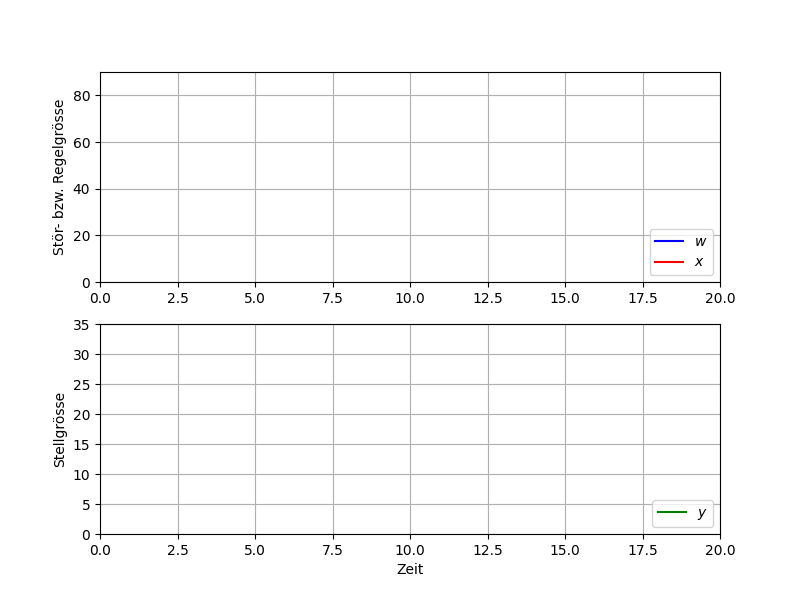
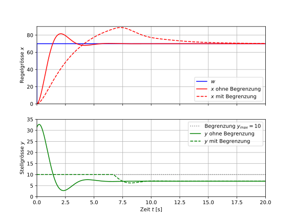
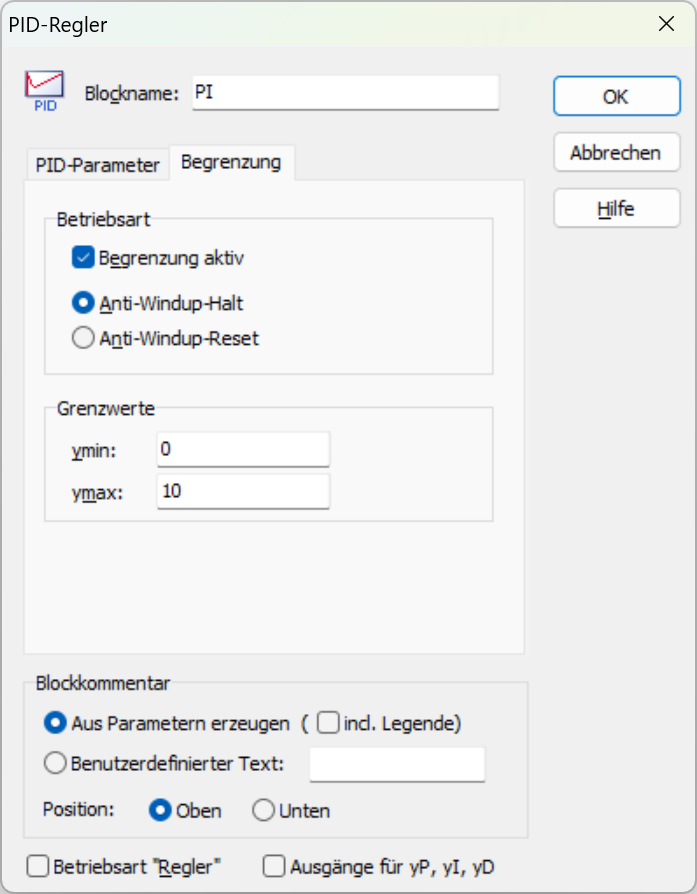
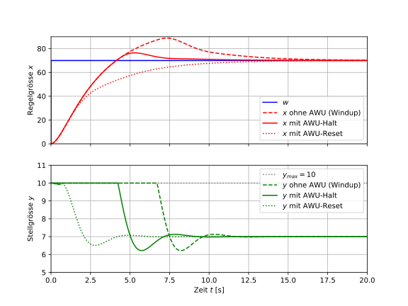
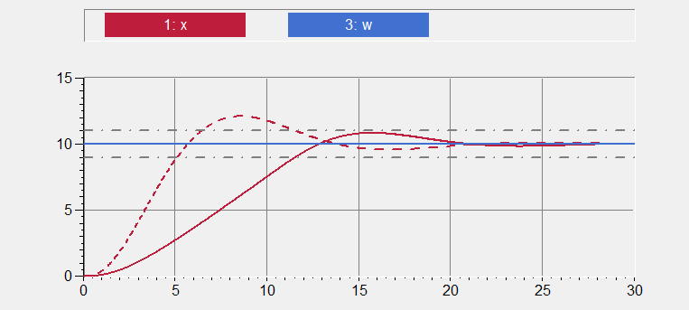
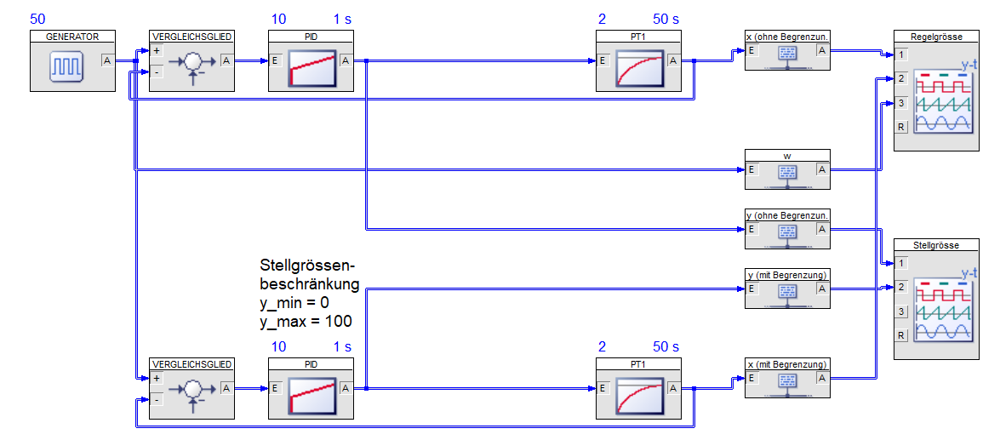
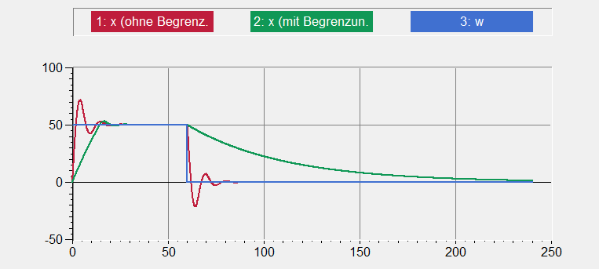
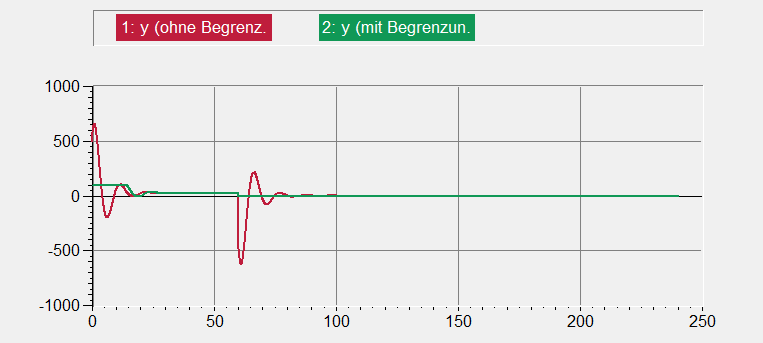

7 Stellgrössenbeschränkung
Beim Reglerentwurf arbeiten wir üblicherweise mit der Einheits-Führungssprungantwort (Sollwertsprung w = 1), wie wir dies bereits in Abschnitt 5 (z. B. in Abb. 5.14) kennengelernt haben. Dies ist sinnvoll, da sich aufgrund der Linearität für jeden anderen Sollwert derselbe Verlauf ergibt, wobei alle Grössen entsprechend skaliert werden. Nachfolgend ist die Führungssprungantwort des gleichen Regelkreises wie in Abb. 5.14 dargestellt für einen Sollwert w = 70. Neben der Führungs- und Regelgrösse ist diesmal ebenfalls die Stellgrösse dargestellt.

Wir haben dabei (stillschweigend) angenommen, dass die Linearität gilt, d. h. dass die Stellgrösse jeden beliebigen Wert annehmen kann. In der Praxis ist die Stellgrösse jedoch immer begrenzt: Ventile können nicht mehr als 100% geöffnet sein (und nicht weniger als 0%), Antriebe besitzen Endanschläge und Heizungen nur eine begrenzte Leistung. Die Stellgrösse ist also in ihrem Wertebereich beschränkt (Stellgrössenbeschränkung).
Die Stellgrösse in obiger Abb. steigt anfänglich aufgrund der grossen Regelabweichung auf über 30. Wie gehen wir damit um, wenn der zulässige Stellgrössenbereich des Stellgliedes (Regelstrecke) z. B. nur 0..10 beträgt?
In diesem Themenblock betrachten wir, welche Auswirkungen eine Stellgrössenbeschränkung auf das Regelverhalten hat. Wir werden das sog. Windup-Phänomen kennenlernen und Anti-Windup-Massnahmen (AWU) besprechen, mit denen dessen negative Auswirkungen verhindert werden können.
- Du kannst erklären, weshalb die Stellgrösse in der Praxis immer begrenzt ist und welche Auswirkungen eine Stellgrössenbeschränkung auf das Regelverhalten hat.
- Du kennst das Windup-Phänomen und kannst dessen Ursache sowie Auswirkungen beschreiben.
- Du kannst Anti-Windup-Massnahmen in der Simulation anwenden und deren Wirkung auf das Regelverhalten beurteilen.
7.1 Stellgrössenbeschränkung
Die Stellgrösse y wird vom Regler erzeugt und wirkt auf die Regelstrecke. Bisher sind wir davon ausgegangen, dass die Stellgrösse beliebige Werte annehmen kann. In der Realität kann die Stellgrösse jedoch nur Werte innerhalb eines bestimmten Bereichs (genannt Stellbereich) annehmen, d. h. es gelten die Grenzen
y_{min} \le y \le y_{max} \tag{7.1}
- Ventile: Der Stellbereich reicht von ganz geschlossen (0 %) bis ganz geöffnet (100 %).
- Antriebe/Stellantriebe: Der Stellbereich wird durch die Endanschläge begrenzt.
- Heizungen: Die maximal mögliche Heizleistung kann nicht überschritten werden.
- Motoren: Drehzahl bzw. Drehmoment haben irgendwo eine Obergrenze.
- Signalverarbeitungskomponenten: Elektronische Komponenten haben immer einen bestimmten Ein- bzw. Ausgangsbereich.
Der Regler, der heutzutage nahezu immer digital bzw. softwarebasiert implementiert wird, kann grundsätzlich beliebige Werte berechnen/ausgeben und daher eine Stellgrösse “fordern”, die ausserhalb des zulässigen Bereichs des Stellgliedes liegt. In einem solchen Fall, befindet sich die effektive Stellgrösse dann in der Begrenzung (auch Sättigung genannt bzw. umgangssprachlich am Anschlag).
Damit dies in der Simulation auch korrekt abgebildet wird, können wir die Stellgrössenbeschränkung mit einem Begrenzungsglied (Block Begrenzer in der Statik-Palette) modellieren, das zwischen Regler und Regelstrecke eingefügt wird. Wir gehen für die folgenden Überlegungen davon aus, dass die Stellgrösse des oben bereits betrachteten Systems nur in einem Bereich von 0 bis 10 liegen kann.

Die obige Abb. zeigt die Führungssprungantwort mit einer Stellgrössenbeschränkung von y_{max}=10. Im Vergleich zur Simulation ohne Begrenzung (durchgezogene Linie) befindet sich die effektive Stellgrösse nun anfänglich eine Zeit lang in der Begrenzung und hat daher den Wert y_{max} (gestrichelte Linie). Durch die Begrenzung wird die Regelung langsamer, da weniger Stellgrösse zur Verfügung steht als im unbegrenzten Fall.
Daneben fallen aber noch zwei Dinge auf, die weniger offensichtlich sind:
- Die Stellgrösse bleibt noch eine gewisse Zeit in der Begrenzung, nachdem der Sollwert überschritten wurde (und die Regelabweichung damit das Vorzeichen gewechselt hat).
- Die Regelung überschwingt deutlich (sogar mehr als im unbegrenzten Fall) obwohl wir durch die Begrenzung doch eine etwas langsamere Regelung erwarten würden.
Die Ursache der obigen Beobachtungen nennt sich Windup (oder Integral Windup) und hängt mit dem I-Anteil im Regler zusammen.
Solange sich die Stellgrösse in der Begrenzung befindet, bringt eine weitere Erhöhung der Stellgrösse nichts. Der I-Anteil eines PI/PID-Reglers integriert in dieser Zeit aber unvermindert weiter und “lädt” sich unnötig auf. Verlässt die Stellgrösse die Begrenzung wieder, so ist der I-Anteil viel zu gross, d. h. der Regler gibt eine höhere Stellgrösse aus, als eigentlich nötig wäre und der I-Anteil (Integrator) muss den zuvor unnötigerweise aufgebauten Teil zuerst einmal wieder “abbauen”.
Dieses unnötige “Aufladen” des I-Anteils während der Begrenzung nennt man Windup (bzw. Integral-Windup) und es verschlechtert das Regelverhalten erheblich (grosses Überschwingen, lange Ausregelzeit, im Extremfalls sogar Instabilität). Eine solche “naive” Implementierung der Stellgrössenbeschränkung, wie wir sie oben vorgenommen haben, ist also nicht brauchbar.
Im Folgenden wollen wir uns überlegen, wie man mit diesem Problem umgeht.
7.2 Anti-Windup (AWU)
Das unerwünschte “Aufladen” des I-Anteils während der Begrenzung kann mit sogenannten Anti-Windup-Massnahmen (kurz AWU) verhindert oder zumindest reduziert werden. AWU wird in Boris automatisch angewendet, sobald eine Stellgrössenbeschränkung vorliegt, die direkt im PID-Block eingestellt werden kann.

Den in Abschn. 7.1 verwendet Begrenzer-Block benötigen wir im Normalfall also nicht, da wir die Begrenzung direkt im Regler (PID-Block) einstellen können (siehe obige Abb.).
Der Begrenzer-Block ist nützlich, wenn eine Begrenzung an einer anderen Stelle im Regelkreis auftritt (z. B. innerhalb der Regelstrecke) oder wir bewusst auf AWU verzichten wollen.
In Boris sind die beiden nachfolgend aufgeführten AWU-Varianten implementiert (siehe Reiter Begrenzung im PID-Block). Damit man Tab. 7.1 versteht, muss man sich in Erinnerung rufen, dass sich die Stellgrösse bei einem PI-Regler aus P-Anteil und I-Anteil zusammensetzt. (Beim PID-Regler käme noch der D-Anteil hinzu.Alles, was wir hier besprechen, gilt genau gleich für eine PID-Regelung.)
y = y_P + y_I
| Variante | Funktionsweise | Wirkung |
|---|---|---|
| Halt1 | Erreicht der I-Anteil (Integratorwert) die Begrenzung (y_I=y_{max} bzw. analog für die untere Begrenzung), wird die Integration angehalten, d. h. der I-Anteil wird nicht weiter aufintegriert. | Der I-Anteil kann nie über die Begrenzung hinaus ansteigen (max. y_I=y_{max}) und sich damit nicht übermässig stark erhöhen. Wenn die Stellgrösse die Begrenzung wieder verlässt, hat der I-Anteil somit nicht mehr einen “unvernünftig” grossen/kleinen Wert. |
| Reset | Gerät die Stellgrösse in die Begrenzung, wird die Integration gestoppt und der I-Anteil auf einen bestimmten Wert gesetzt, nämlich laufend auf die Differenz zwischen Gesamtstellgrösse und P-Anteil, d. h. y_I = y - y_P | Die Begrenzung wird früher verlassen, da der I-Anteil auf einen “optimalen” Wert gesetzt wird. |
Je nach Situation liefert die eine oder die andere Variante “bessere” Ergebnisse, wobei die Variante Reset die Begrenzung i. Allg. früher verlässt, da der I-Anteil (Integrator) nicht noch unnötig “runterintegrieren” muss. Auf jeden Fall verhindern beide Varianten die negativen Folgen des Windups.

Die obige Abbildung zeigt die Führungssprungantwort des Regelkreises aus Abb. 7.2 mit “naiver” Stellgrössenbeschränkung (ohne AWU) sowie mit den beiden AWU-Varianten gemäss Tab. 7.1. Wie wir bereits in Abschn. 7.1 gesehen haben, weist die Regelgrösse ohne AWU ein deutliches Überschwingen auf. Mit AWU wird das Überschwingen stark reduziert und die Zeit, in der sich die Stellgrösse in der Begrenzung befindet, deutlich verkürzt. Bei der Variante Halt überschwingt die Regelgrösse noch leicht, da der I-Anteil anfänglich noch zu gross ist. Bei der Reset-Variante verlässt die Stellgrösse die Begrenzung deutlich früher und es kommt nicht zum Überschwingen.
Stellgrössenbeschränkung sowie die beiden AWU-Varianten (Halt und Reset) können in Boris direkt im PID-Regler-Block konfiguriert werden.
Die beiden Varianten unterscheiden sich situativ, doch für unsere Zwecke können wir sie als gleichwertig betrachten.
7.3 Fazit
Der Reglerentwurf endet nicht mit der Anwendung eines Entwurfsverfahrens (vgl. Abschnitt 6) und einer Simulation der Einheits-Führungssprungantwort. Da in der Realität immer Stellgrössenbeschränkungen vorliegen, müssen diese berücksichtigt werden. Dazu sind realitätsnahe Simulationen nötig, die mit anwendungsspezifischen Führungsgrössen und Stellgrössenbeschränkungen (inkl. AWU-Massnahmen) durchgeführt werden. Das Regelverhalten kann dann unter Umständen deutlich vom unbegrenzten Fall abweichen.
Der Reglerentwurf sieht in der Praxis also folgendermassen aus:
- Auslegung mittels Entwurfsverfahrens, wobei Stellgrössenbeschränkungen noch nicht berücksichtigt werden (siehe Abschnitt 6). Dabei wird üblicherweise mit Einheitssprungantworten etc. gearbeitet, da das System linear ist.
- Berücksichtigung von Stellgrössenbeschränkungen (inkl. AWU), womit das Verhalten nicht mehr linear ist und daher mit anwendungstypischen (realen) Führungs- und Störgrössen simuliert werden muss.
- Beurteilung der Regelgüte anhand der bekannten Gütekriterien (vgl. Gütekriterien).
Damit kommt das Verhalten in der Simulation im Idealfall nahe an das Verhalten der effektiven Anwendung (Anlage). Praktisch immer wird auf der Anlage aber trotzdem noch ein gewisses Fine-Tuning nötig sein (vgl. Schritt 5 in Abb. 2.1).
Aufgaben
Bestimme die Gütekriterien der folgenden Regelung:
- Strecke: I-T2 mit K_I = 0.2 \quad T_1 = 2\,\mathrm{s} \quad T_2 = 0.5\,\mathrm{s}
- Regler: P mit K_P = 2
Überzeuge dich davon, dass ohne Stellgrössenbeschränkung die Gütekriteren (Anregelzeit T_{cr}, Ausregelzeit T_{cs}, Überschwingweite x_m in [%] und bleibende Regelabweichung e_\infty in [%]) identisch sind für die Führungsgrösse w = 1 und die Führungsgrösse w = 10. (Gehe von einem 10%-Toleranzband aus.)
T_{cr} = \qquad \qquad \mathrm{s}
T_{cs} = \qquad \qquad \mathrm{s}
x_m = \qquad \qquad \mathrm{\%}
e_\infty = \qquad \qquad \mathrm{\%}
Stelle nun eine Stellgrössenbeschränkung ein, wobei der Stellgrössenbereich +/-5 beträgt. Simuliere wiederum die Führungssprungantwort für w = 1 sowie w = 10. Was hat sich geändert? Notiere nachfolgend die Gütekriterien für die Simulation mit w = 10.
T_{cr} = \qquad \qquad \mathrm{s}
T_{cs} = \qquad \qquad \mathrm{s}
x_m = \qquad \qquad \mathrm{\%}
e_\infty = \qquad \qquad \mathrm{\%}
Ohne Stellgrössenbeschränkung: Verhalten ist unabhängig vom Sollwertsrpung (w = 1 bzw. w = 10 führen qualitativ zum selben Regelverhalten).
T_{cr} = 5.1 \mathrm{s}
T_{cs} = 11.6 \mathrm{s}
x_m = 21 \mathrm{\%}
e_\infty = 0 \mathrm{\%}
Mit Stellgrössenbeschränkung: Verhalten ist nicht mehr überall unabhängig vom Sollwertsrpung (w = 1 bzw. w = 10 führen nicht zum selben Regelverhalten, da die Stellgrösse bei w = 10 in die Begrenzung geht).
T_{cr} = 11.6 \mathrm{s}
T_{cs} = 11.6 \mathrm{s}
x_m = 8 \mathrm{\%}
e_\infty = 0 \mathrm{\%}

Eine träge Heizung wird näherungsweise als P-T1-Strecke modelliert mit K_{PS} = 2 und T_1 = 50\,\mathrm{s}. Die Stellgrösse entspricht der Heizleistung in [%], d. h. liegt im Bereich von 0 bis 100.
Baue den Regelkreis auf und verwende einen PI-Regler mit K_{PR} = 10 und T_i = 1\,\mathrm{s}. Stelle die Stellgrössenbeschränkung korrekt ein und verwende die AWU-Variante Halt.
Der Sollwert soll auf 50 °C springen und nach 60 s wieder sprunghaft auf 0 zurückgehen. Die gesamte Simulation soll 240 s dauern. Erstelle je ein Diagramm für die Regelgrösse sowie die Stellgrösse und vergleiche darin die Simulationsergebnisse mit/ohne Stellgrössenbeschränkung.

Regelgrösse:

Stellgrösse:
